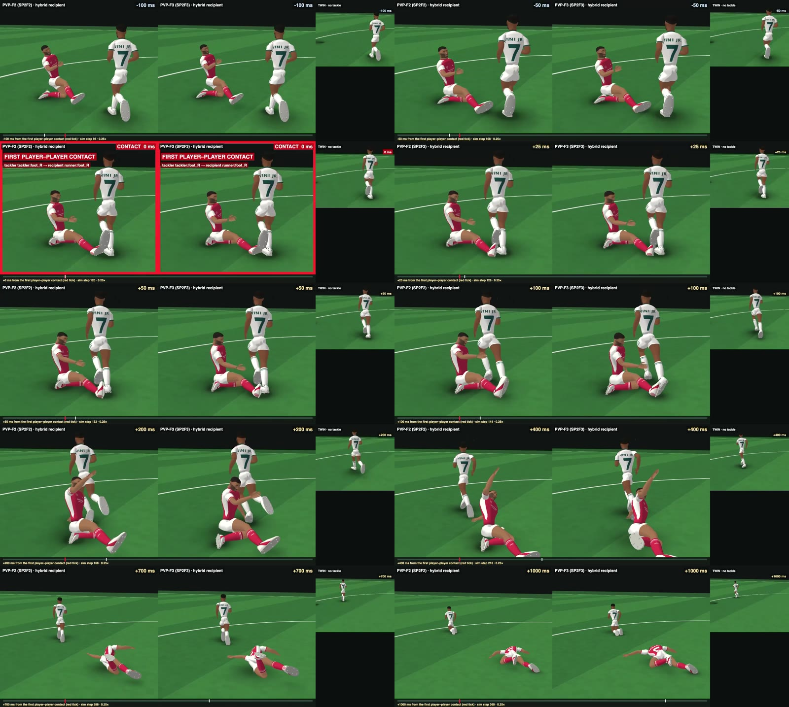
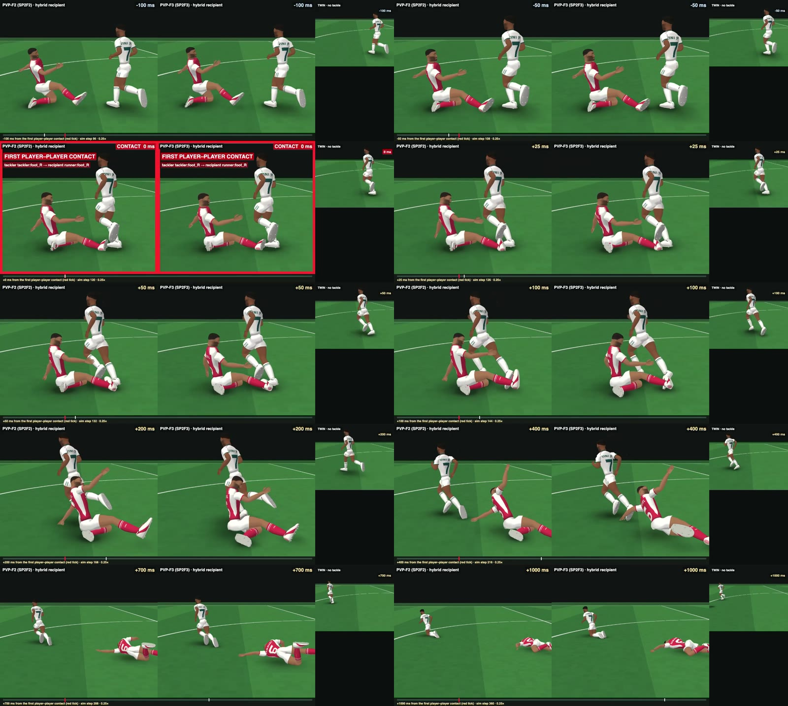
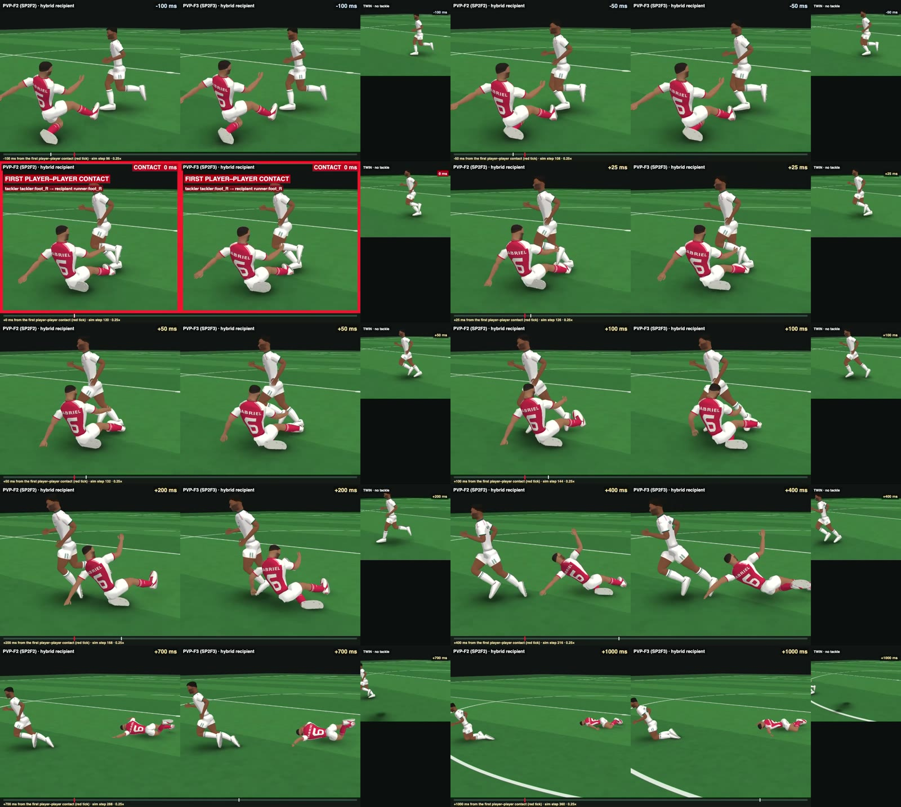
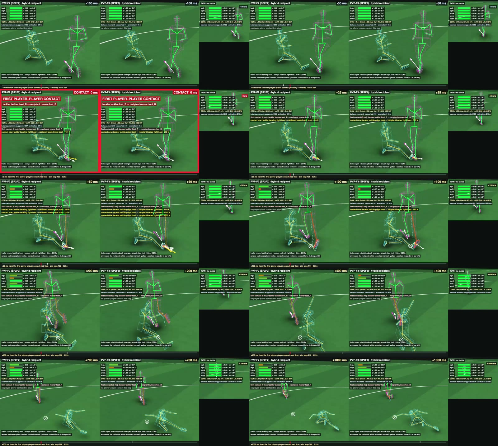

HYBRID-RUN-1: animation-driven, physically interruptible runner
15 Oct 2026 · instruction sources/2026-10-15_user_instruction_hybrid_run1_animation_driven_interruptible_runner.md · frozen records (720 steps, 3.0 s): NC 52c3320f, SH_BRUSH 6e49d614, SH_BUMP 971195aa, SH_STRONG 02626820, PVP_TWIN 2de7a70f, PVP_F2 f36c9e7c, PVP_F3 245cbc6e; the same runs continued to the end of RUN-1's data (783 steps) are identical step for step over their first 720 steps.
I cannot play video in real time: I reviewed every clip as frame strips and contact sheets. Please watch the videos yourself; they are what this page is for.
RUN ANIMATION CAN COEXIST WITH PHYSICAL BODY: YES
SHOULDER CONTACT PHYSICALLY INTERRUPTS RUN: YES
MODERATE BUMP CAN RECOVER WHILE RUN CONTINUES: NO
REGIONAL PHYSICAL OVERRIDE WORKS: YES
ROOT MOTION / PHYSICS COEXISTENCE: PARTIAL
SLIDE-TACKLE SUPPORT LOSS IS NOW MEANINGFUL AGAINST STABLE TWIN: PARTIAL
FULL PHYSICS-GENERATED RUNNING REQUIRED: NO
RECOMMEND HYBRID ANIMATION + ACTIVE RIGIDBODY ARCHITECTURE: NEEDS MORE EVIDENCE
How the hybrid runner works
hr_intent.mjs). The intent never sees the physical body.1 · Joint tracking: PD on RUN-1's joint targets plus the relative-motion feed-forward of the intended limb motion (
hr_id.mjs). Gains come from 8 Hz (hip, knee), 7 Hz (ankle), 6 Hz (trunk, arms) and 5 Hz (neck) on the subtree inertia. Torque is limited inside the solver to 2 × the athlete's isometric capacity (hr_drive.mjs). A supporting leg runs at 30 % authority with no feed-forward, so its stance is carried by the support, not by the joint drive.2 · Gait support (the gait abstraction, not muscle): the intended ground reaction is applied while a boot is on the turf. It is an internal pair: −F at the boot's contact centroid, +F spread over the other bodies by mass. Horizontal: velocity only (25 /s along, 4 /s across; no position term). Vertical: RUN-1's COM height and velocity (150 /s², 25 /s). Bounded by μ 0.9, 3.5 BW, a lean envelope (35–60°, reach 1.15 m) and pelvis organisation (35–70° tilt). Load-sensed: the horizontal turf force the boot actually received is fed back, so the total follows the intent.
3 · Regional authority (legL, legR, trunk, armL, armR): D = max(0, e − eTol)/15° + J/4 N·s, α* = 0.15 + 0.85·e−D. α falls with τ 0.02 s and recovers with τ 0.3 s. e is the region's joint-tracking error; eTol is legs 11°, trunk 3°, arms 3° (1.5 × the no-contact maximum, at least 3°); J is the player–player contact impulse on the region's bodies (20 ms sensing delay, 30 ms window). α scales the joint drive (K, D, feed-forward); the animation part of the pelvis moment uses αtrunk.
Not used (tried, documented, off): swing-foot placement, phase synchronisation. Never: pose writes, teleporting, kinematic bodies, position terms toward the animation path.
Reading the diagnostic views
- Skeleton colour = that region's authority α: green = the animation's drive at full strength (α 1); orange → red = physics winning (floor 0.15).
- Dashed figure: section A shows RUN-1 itself at its own world position, i.e. where the animation would have put the athlete. Sections B / C show RUN-1's joint targets laid on the PHYSICAL pelvis, i.e. this step's per-joint intent.
- Arrows at the COM's ground point: magenta = intended (RUN-1) COM velocity, white = actual, 0.2 m per m/s.
- Bars (the runner A / recipient): α and tracking error per region; COM speed (intended); turf load per boot (BW); the balance moment, split into supported and animation parts.
- Section C diagnostic also shows the colliders (tackler cyan, recipient magenta), the tackling-boot trail (cyan), the struck-foot trail (orange), contact normals (white) and forces (yellow) on the recipient, and the first-contact ring.
A · No contact: ORIGINAL RUN-1 | HYBRID RUN-1 | HYBRID diagnostic
The same intent from frame 462 (the PVP-1 recipient's RUN-1 clock): left, RUN-1 itself (kinematic); middle, the hybrid physical body; right, the hybrid's diagnostic with RUN-1 dashed at its own position. 0 → 2.9 s.
| measure (hybrid against RUN-1, no contact) | value |
|---|---|
| falls (to the end of RUN-1's data, 3.26 s) | none (also the PVP TWIN) |
| pelvis orientation error | median 2.2° · p95 3.9° · max 4.1° |
| joint RMS error, legL | median 1.7° · p95 4.9° · max 7.2° |
| joint RMS error, legR | median 1.4° · p95 4.5° · max 6.4° |
| joint RMS error, trunk | median 1.0° · p95 1.6° · max 1.8° |
| joint RMS error, armL | median 0.3° · p95 0.8° · max 0.9° |
| joint RMS error, armR | median 0.4° · p95 0.7° · max 0.8° |
| touchdowns against RUN-1's (frames of 1/240 s; − = early) | 1, -2, -2, -2, -3, -3, -4, -1, -4 (mean -2.2) |
| planted boot slip (horizontal travel while carrying > 0.5 BW) | ≤ 3.5 cm |
| COM against RUN-1's: sideways (left) / vertical / along (cm) | 0.5 s: -2.5 / 0.1 / -3.4 · 1 s: -1.5 / -1.5 / -4.6 · 1.5 s: -1.0 / 0.9 / -9.4 · 2 s: 0.0 / -2.0 / -10.4 · 2.5 s: 2.1 / 0.6 / -14.6 · 2.9 s: 4.0 / 0.1 / -17.2 |
| forward speed deficit | 5.6 cm/s (1.2 % of 4.5 m/s): the hybrid falls behind RUN-1's root, by design there is no position term |
| lowest regional authority | 1.00 (no region ever yields) |
| balance moment: supported / animation-consistency (N·m) | median 105 / 0 · p95 274 / 174 · max 372 / 292 |
B · Shoulder to shoulder: BRUSH | BUMP | STRONG
A (white, #7) runs straight; B (red, #6) starts 1.1 m to A's right, half a step out of phase, at an intended heading θ toward A, and its intent straightens over [tc − 0.1, tc + 0.2] s, where tc is when the two intended COMs would be 0.42 m apart. Severity is θ alone (6° / 10° / 15°). Nobody's fall is set anywhere. Each panel follows its own pair, from 0.5 s before the first contact to 2.0 s after it.
Diagnostic: authority colours on both runners, RUN-1's joint targets dashed on the physical pelvis, A's bars
BRUSH, late: A's stumble and fall after the brush (+0.8 → +2.35 s), from the run continued to the end of RUN-1's data
| BRUSH (θ 6°) | BUMP (θ 10°) | STRONG (θ 15°) | |
|---|---|---|---|
| first player contact | 0.908 s · A right forearm × B left forearm | 0.613 s · A right upper arm × B left upper arm | 0.358 s · A right forearm × B left forearm |
| contact lasts until | 1.733 s | 1.092 s | 1.125 s |
| impulse on A (N·s): toward its left (away from B) / up / forward | 47 / 4 / 2 | 77 / -23 / 9 | 102 / 0 / 11 |
| peak contact force | 2202 N | 424 N | 2634 N |
| A off its no-contact path at +0.25 s: sideways (left) / along · trunk tilt (no contact) | 5 / 0 cm · 13° (14°) | 6 / -0 cm · 14° (12°) | 10 / 0 cm · 14° (14°) |
| A off its no-contact path at +0.5 s: sideways (left) / along · trunk tilt (no contact) | 9 / -0 cm · 12° (12°) | 19 / -6 cm · 22° (13°) | 20 / 0 cm · 15° (12°) |
| A off its no-contact path at +1 s: sideways (left) / along · trunk tilt (no contact) | 18 / -0 cm · 13° (14°) | 32 / -28 cm · 19° (12°) | 32 / -11 cm · 15° (11°) |
| A off its no-contact path at +1.5 s: sideways (left) / along · trunk tilt (no contact) | 20 / -5 cm · 17° (12°) | 34 / -129 cm · 92° (12°) | 32 / -57 cm · 28° (14°) |
| lowest authority, A (time) | armR 0.30 (1.65 s) legR 0.42 (3.00 s) legL 0.35 (2.87 s) | armR 0.19 (0.92 s) legR 0.37 (1.82 s) trunk 0.90 (0.93 s) legL 0.37 (1.49 s) armL 0.43 (2.33 s) | armR 0.20 (0.49 s) legR 0.35 (1.84 s) legL 0.34 (1.51 s) trunk 0.99 (2.35 s) |
| lowest authority, B | armL 0.30 (1.65 s) | armL 0.20 (0.92 s) legL 0.94 (0.85 s) | armL 0.20 (0.49 s) legL 0.82 (0.79 s) |
| contact arm back above α 0.9 after falling below 0.6 (A / B) | 1.25 / 1.25 s | 0.97 / 0.98 s | 1.18 / 1.19 s |
| A falls (first non-boot body on the turf; runs continued to the end of RUN-1's data, 3.26 s) | 3.158 s (+2.25 s), left thigh | 1.775 s (+1.16 s), left thigh | 1.867 s (+1.51 s), left thigh |
| B falls (B's RUN-1 data ends at 2.92 s) | no | no | no |
"Left" is A's own left (away from B). Off-path distances are A's COM against the no-contact run at the same step. Trunk tilt is the thorax's angle from vertical.
C · Slide tackle: the frozen PVP-1 canonical setup with the hybrid recipient
SP2F2 and SP2F3 are unchanged (5.0 m/s, own solo frames, M1c, TCF-1, F37.5), with the same approach geometry, the same recipient RUN-1 phase (frame 462 at step 0) and the same placement as PVP-1 CANON. Only the recipient architecture changes: it is the hybrid runner from step 0 instead of a handoff to a fully physical body. Cameras are PVP-1's collision views (azimuths relative to the tackler's travel). The TWIN (no tackle) is the right-hand column, on the PVP-F2 camera path. −0.3 → +1.2 s around the first contact.
Player–player pairs: F2 tackler tackling right boot → recipient loaded right boot (+0…+92 ms, peak 2253 N); tackler tackling right boot → recipient left boot (+29…+29 ms, peak 395 N); tackler head → recipient left forearm (+117…+125 ms, peak 554 N).
F3 tackler tackling right boot → recipient loaded right boot (+0…+112 ms, peak 1876 N); tackler left forearm → recipient left shin (+233…+337 ms, peak 536 N); tackler left forearm → recipient left boot (+271…+412 ms, peak 713 N).
Recipient down (first non-boot body on the turf): F2 +1.01 s (right thigh), F3 +0.96 s (right thigh); TWIN never, to the end of RUN-1's data.
Clean close view (az 60°)
Side, perpendicular to the tackle direction
Rear 3/4 (the REFERENCE3 camera)
Diagnostic
REFERENCE3 | PVP-F2 | PVP-F3 (local only, not in Git)
REFERENCE3 is mirrored and aligned on its first boot-to-foot contact (≈ 0.72 s ± 0.05 s). These files exist only on this machine (review/local_reference/).
Frozen frames: −100 | −50 | CONTACT | +25 | +50 | +100 | +200 | +400 | +700 | +1000 ms (PVP-F2 | PVP-F3 | TWIN)




Struck leg, support and body against the twin (measured)
| from first contact | F2 authority: struck R leg · far L leg | F3 authority | F2 struck boot moved (cm; along / left / up) | F3 struck boot | TWIN boot | F2 turf load (BW) | F3 turf load | TWIN load | F2 COM v (m/s; along / left / up) | F3 COM v | TWIN COM v | F2 pelvis height · trunk tilt | F3 | TWIN | tackler speed F2 / F3 |
|---|---|---|---|---|---|---|---|---|---|---|---|---|---|---|---|
| +0 ms | 1.00 · 1.00 | 1.00 · 1.00 | 0 / 0 / 0 | 0 / 0 / 0 | 0 / 0 / 0 | R 2.29 · L 0.00 | R 2.06 · L 0.00 | R 2.09 · L 0.00 | 4.30 / 0.04 / 0.26 | 4.31 / 0.04 / 0.22 | 4.30 / 0.04 / 0.26 | 0.90 · 14° | 0.89 · 14° | 0.90 · 14° | 4.40 / 4.45 |
| +25 ms | 0.89 · 1.00 | 0.96 · 1.00 | 0 / 0 / 1 | 0 / 0 / 0 | 0 / 0 / 1 | R 1.80 · L 0.00 | R 1.90 · L 0.00 | R 1.80 · L 0.00 | 4.27 / -0.05 / 0.50 | 4.25 / -0.06 / 0.46 | 4.30 / 0.02 / 0.50 | 0.90 · 14° | 0.90 · 14° | 0.90 · 14° | 4.13 / 4.06 |
| +50 ms | 0.40 · 1.00 | 0.40 · 1.00 | 0 / -2 / 3 | 0 / -2 / 3 | 1 / 0 / 4 | R 1.32 · L 0.00 | R 1.81 · L 0.00 | R 1.30 · L 0.00 | 4.21 / -0.19 / 0.57 | 4.13 / -0.29 / 0.55 | 4.36 / 0.05 / 0.63 | 0.92 · 14° | 0.91 · 14° | 0.92 · 14° | 3.67 / 3.32 |
| +100 ms | 0.17 · 0.80 | 0.17 · 1.00 | -1 / -13 / 16 | 0 / -15 / 13 | 7 / -1 / 13 | R 0.00 · L 1.22 | R 0.00 · L 0.00 | R 0.00 · L 0.00 | 4.07 / -0.30 / 0.52 | 4.03 / -0.67 / 0.28 | 4.54 / 0.06 / 0.36 | 0.94 · 14° | 0.94 · 14° | 0.95 · 14° | 3.31 / 2.74 |
| +150 ms | 0.23 · 0.77 | 0.17 · 0.95 | 10 / -22 / 37 | 6 / -28 / 37 | 19 / -6 / 28 | R 0.00 · L 0.91 | R 0.00 · L 0.87 | R 0.00 · L 0.00 | 3.89 / -0.34 / 0.49 | 3.53 / -0.45 / 0.35 | 4.54 / 0.06 / -0.13 | 0.97 · 16° | 0.96 · 15° | 0.95 · 12° | 3.18 / 2.65 |
| +200 ms | 0.35 · 0.58 | 0.29 · 0.75 | 33 / -26 / 54 | 24 / -31 / 55 | 46 / -15 / 35 | R 0.00 · L 0.20 | R 0.00 · L 0.48 | R 0.00 · L 0.00 | 3.85 / -0.26 / 0.24 | 3.34 / -0.37 / 0.16 | 4.54 / 0.06 / -0.62 | 0.99 · 18° | 0.97 · 19° | 0.93 · 11° | 3.12 / 2.59 |
| +300 ms | 0.53 · 0.43 | 0.49 · 0.41 | 96 / -32 / 54 | 76 / -35 / 62 | 118 / -23 / 36 | R 0.00 · L 0.39 | R 0.00 · L 0.00 | R 0.00 · L 1.77 | 3.76 / -0.24 / -0.68 | 3.12 / -0.46 / -0.73 | 4.41 / -0.01 / -0.11 | 0.97 · 19° | 0.95 · 27° | 0.89 · 11° | 3.02 / 2.22 |
| +500 ms | 0.59 · 0.54 | 0.50 · 0.40 | 190 / -15 / 13 | 170 / -24 / 14 | 282 / 2 / 1 | R 1.33 · L 0.00 | R 0.29 · L 0.00 | R 0.00 · L 0.00 | 4.25 / -0.23 / 0.11 | 4.07 / -0.49 / 0.10 | 4.53 / -0.06 / -0.26 | 0.86 · 16° | 0.89 · 18° | 0.96 · 12° | 2.65 / 1.82 |
| +750 ms | 0.39 · 0.57 | 0.39 · 0.55 | 245 / -15 / 13 | 223 / -32 / 13 | 302 / 0 / 8 | R 0.04 · L 1.24 | R 0.17 · L 1.23 | R 0.52 · L 0.00 | 3.81 / 0.09 / -0.94 | 3.49 / -0.19 / -1.20 | 4.53 / 0.08 / 0.57 | 0.72 · 19° | 0.69 · 18° | 0.93 · 14° | 2.11 / 1.34 |
| +1000 ms | 0.73 · 0.35 | 0.66 · 0.34 | 360 / -34 / 13 | 312 / -55 / 12 | 434 / -21 / 33 | R 0.46 · L 0.21 | R 0.01 · L 0.21 | R 0.00 · L 2.04 | 3.21 / 0.10 / -1.58 | 2.22 / -0.10 / -0.33 | 4.33 / -0.03 / 0.12 | 0.50 · 35° | 0.48 · 37° | 0.90 · 12° | 1.81 / 1.01 |
"Along" is the recipient's intended running direction; "left" is the recipient's own left (the tackler comes from its left and travels toward its right, so negative = pushed along the tackler's travel). The struck boot's displacement is measured from its position at first contact. Loads are boot–turf normal force in body weights.
Erratum found on the way (PVP-1 collision review, not edited): its "left" axis is local +x, which on this body is the recipient's anatomical right (thigh_L sits at −x). So the contact force there pointed toward the recipient's right, away from its other boot, along the tackler's travel, and not "toward the recipient's other foot" as the page says. This page uses the anatomical left.
D · Sensitivity: the animation-consistency pelvis moment
| run | animation-consistency moment, first second after first contact: mean / max (N·m) · angular impulse (N·m·s) | supported moment: mean / max · angular impulse | struck runner falls: frozen | …with the animation-consistency moment removed from first contact |
|---|---|---|---|---|
| NC | 52 / 292 · 52 | 109 / 362 · 109 | no (to the end of RUN-1's data) | – |
| PVP_TWIN | 49 / 287 · 49 | 107 / 336 · 107 | no (to the end of RUN-1's data) | – |
| SH_BRUSH (B: 43 / 313) | 46 / 308 · 46 | 87 / 352 · 87 | +2.25 s (extended run) | +1.18 s · B falls 2.27 s 43f45b33 |
| SH_BUMP (B: 49 / 224) | 167 / 458 · 167 | 148 / 762 · 148 | +1.16 s | +0.83 s · B falls 2.50 s 2833f786 |
| SH_STRONG (B: 51 / 242) | 120 / 440 · 120 | 108 / 448 · 108 | +1.51 s | +1.13 s · B falls 1.47 s 771b9a62 |
| PVP_F2 | 201 / 474 · 201 | 179 / 669 · 179 | +1.01 s | +0.60 s 6dd944eb |
| PVP_F3 | 249 / 475 · 249 | 182 / 603 · 182 | +0.96 s | +0.57 s 5831539e |
Window: the first second after the first player contact; NC and TWIN use the same window as PVP (from step 120). Cut runs: hr_runner.mjs option support.acCut = "touch"; frozen runs have it null.
No contact at all, moment removed at a fixed time: at 0.358 s → falls 2.05 s later; at 0.5 s → falls 1.75 s later; at 0.9 s → falls 1.32 s later. So the moment carries load even without contact: RUN-1's pelvis motion is not angular-momentum consistent, and the hybrid runner cannot follow it upright without an external moment. After a contact the same moment works 3–5× harder and props the struck runner up. Both facts belong to the angular reconciliation, which is still open.
E · Authoritative-simulation boundary
- Deterministic. Fixed 240 Hz step, one Jolt world, no random number anywhere (scenes, runner law, analysis, renders). Every run has a per-step state hash chain. Re-running reproduces it: SH_BUMP
971195aaand PVP_F3245cbc6ewere reproduced from scratch, and the extended runs match the frozen ones step for step. - What the runner reads: its own body state; its intent (RUN-1 at this step's frame); and the plant's record of its own previous-step contacts (turf loads and player–player impulses: touch / load sensing with a 20 ms delay). Nothing comes from presentation; the renders read the records and never feed back.
- What would have to be surfaced to the simulation architecture if this is adopted (it must not be introduced in rendering):
- The locomotor intent (which RUN-1 frame, heading, desired velocity), owned by the action / locomotion layer.
- The physical state that decides outcomes: COM position and velocity, support (which boots carry load), fallen or not. This becomes authoritative input to possession, tackle outcome and fall state.
- Every force the runner adds besides contacts and gravity: the gait-support pair, the supported pelvis moment and the animation-consistency moment. The last is a gameplay-affecting non-physical force; if kept, it must be an explicit simulation term with its own budget, not a presentation detail.
- Regional authority and its constants, since they decide who wins a contact.
- All parameters (gains, drive κ, tolerances, support gains, μ, Fmax, the lean and tilt envelopes): versioned with the simulation.
- Not done: nothing is integrated into the match simulation. The experiment lives in
review_artifacts/physical_character_v2/hybrid_run1/with its own Jolt world; the authoritative simulation, V1, RUN-1, C3, ball physics, PVP-1, SP2F2 and SP2F3 are untouched.
F · The 15 questions
- Can RUN-1 remain the locomotor intent while the character is physically collidable?
YES. In every run RUN-1 plays unaltered, one frame per step, from step 0 to the end: before, during and after every contact. Nothing stops, edits or re-times it. The body under it is the full 14-body V2 rigid body. It collides with everything from step 0. It starts with RUN-1's own pose and body velocities (finite differences of the animation, one velocity write at step 0). After that it is never posed, teleported or made kinematic. It follows RUN-1 only through bounded forces: (1) joint motors limited to 2 × the athlete's isometric capacity and scaled by regional authority; (2) the intended ground reaction, applied as an internal force pair through a boot that is actually on the turf (≤ 3.5 BW, friction cone μ 0.9); (3) a bounded pelvis moment. In five contact scenes, contacts pushed the body off its line and knocked it down while the intent went on saying "run". - Does the no-contact hybrid reproduce RUN-1 without requiring physics-generated gait?
YES, with one non-physical part. Over the whole RUN-1 run-in available from this phase (3.26 s) the runner does not fall. Measured against RUN-1: pelvis orientation error median 2.2° (max 4.1°); joint RMS error in the legs median 1.4–1.7° (max 7.2°), trunk ≤ 1.8°, arms ≤ 0.9°. Touchdowns come on average 2.2 frames (9 ms) early (range 4 early to 1 late). A planted boot slips at most 3.5 cm. The COM stays within 5 cm of RUN-1's sideways and 2.2 cm vertically. Forward speed is 1.2 % low (5.6 cm/s, so the runner is 17 cm behind RUN-1 at 2.9 s). No muscle model generates the gait. Locomotion comes from the gait abstraction: the intended ground reaction pushes through the real stance boot, so the body moves only through actual turf contact. One part does not come from the turf. RUN-1's angular momentum is not dynamically consistent, so following RUN-1's pelvis orientation needs a bounded external moment, the "animation-consistency" moment: median 0, mean 52, max 292 N·m in this run. Without it, the undisturbed runner falls 1.3–2.0 s after it is removed (sensitivity check, section D). - Can a shoulder bump physically displace the upper body while the legs continue running?
YES. BUMP: the first contact is A's right upper arm against B's left upper arm at 0.613 s, with 77 N·s on A toward its left (away from B). A's contact-arm authority falls to 0.19 and its trunk's only to 0.90. The legs keep running, but their tracking error grows: leg authority is 0.94 at +0.25 s, 0.55 at +0.5 s and 0.37 by +1.0 s. A is pushed 6 / 19 / 32 cm off its no-contact path at +0.25 / +0.5 / +1.0 s. Its trunk tilts 22° at +0.5 s (no contact: 13°), and it keeps running on the displaced line. STRONG (102 N·s): 10 / 20 / 32 cm, with leg authority 0.82 at +0.5 s and 0.46 at +1.0 s. BRUSH (47 N·s): 5 / 9 / 18 cm, with the legs at full authority for 1.25 s. So the upper body is displaced while the legs run on, but after a BUMP or STRONG the legs soon struggle too. - Can the player recover naturally from a modest bump while RUN intent continues?
NO (the displaced runner). Running continues, and the struck arm gets its authority back (BUMP 0.97 s, STRONG 1.18 s, BRUSH 1.25 s). But the gait never settles back, and A falls at every severity: BUMP at +1.16 s, STRONG at +1.51 s, and even BRUSH at +2.25 s. The BRUSH fall shows only when the run is continued to the end of RUN-1's data; the 3.0 s records end 0.16 s before it (section B, "BRUSH, late"). The legs' tracking degrades from +0.25 s (BUMP), +0.4 s (STRONG) or +1.25 s (BRUSH). Leg authority falls to 0.35–0.37, the stride shortens and A goes down. B runs on at all three severities: its own intent drove the contact, and the contact mostly cancels its veer. Nothing removes a lateral disturbance. The runner has no stepping or foot-placement response. The minimal foot-placement variant I tried made the runner worse and is off. - Can stronger contact progressively disturb pelvis/legs rather than requiring a binary ragdoll switch?
YES. There is no switch anywhere. Authority falls region by region and continuously, driven by tracking error beyond the no-contact tolerance and by sensed contact impulse. BRUSH: only the arms are affected at first (α 0.30), and the legs are untouched for 1.25 s. BUMP / STRONG: arm α 0.19 / 0.20, trunk ≥ 0.90; the legs follow from +0.25 / +0.4 s and fall progressively to 0.34–0.37 as the stride breaks. PVP: the struck leg drops to 0.17 within 100 ms while the trunk and arms stay at 1.0. Then the other leg drops (0.58 at +200 ms, 0.43 at +300 ms in F2) as the disturbance spreads. Gait support has no authority switch either: it fails only physically, when no boot is on the turf, the COM leaves the lean envelope, or the pelvis is disorganised. Bigger is not always worse: STRONG (102 N·s) falls later than BUMP (77 N·s), +1.51 s against +1.16 s. - Does root motion currently fight physical displacement?
LINEAR: NO · ANGULAR: PARTLY. Linear: no. There is no root-position term anywhere. The intended ground reaction regulates velocity only (25 /s along the run, 4 /s across it), and only through a real boot–turf contact. After the BUMP, A stays 32 cm off its path and runs on from there; nothing pulls the body back to the animation path. Angular: partly yes. The pelvis moment pulls the pelvis toward RUN-1's world orientation. Its supported part is bounded by the actual support load. Its animation-consistency part (≤ 450 N·m pitch/roll, ≤ 150 N·m yaw, scaled by the trunk's authority) is an external moment that no contact supplies. After a contact it works 3–5× harder than in undisturbed running. Over the first second after contact its mean is 167 N·m (BUMP), 201 (F2) and 249 (F3), against 52 undisturbed, often at its 450 N·m cap. The trunk's authority does not fall when the whole body tilts, because it measures the trunk joints and not the pelvis's world orientation. With this moment removed at first contact, every struck runner falls sooner: PVP +0.60 s instead of +1.01 s; BUMP +0.83 s instead of +1.16 s. The undisturbed runner, too, falls 1.3–2.0 s after the moment is removed, so the moment carries load in the architecture as it stands. It is shown in every diagnostic ("balance moment … animation N·m") and never hidden, but it does fight angular displacement. - What minimum change is needed to reconcile animated locomotion with authoritative physical COM motion?
Linear: done here · angular: open. What worked here: (1) RUN-1's root/COM motion is an intended VELOCITY (and height), never a position. (2) It is delivered only as an intended ground reaction through a boot that is actually on the turf. It is an internal force pair, so momentum changes only through real contacts and friction. (3) It is bounded physically (friction cone, maximum force, lean envelope, pelvis organisation), so contacts can defeat it. (4) Joints are tracked in joint space only, with finite torque and regional authority. The angular part is not reconciled. RUN-1 is not angular-momentum consistent, so the pelvis needs an external moment. The minimum next change is to make that moment physical, in one of two ways: (a) pay for it from the support (a centre-of-pressure / foot-torque budget at the stance boot), or (b) make RUN-1's intended pelvis/trunk motion angular-momentum consistent, which edits the intent and not the physics. Either way, put it under an authority that falls when the pelvis's world orientation departs from the intent. That is not done here. - Are procedural foot adjustments required?
Not for running; yes for recovery (as a balance response). Undisturbed running needs none. Touchdowns are within 4 frames of RUN-1's and slip is ≤ 3.5 cm, with no IK and no foot ever placed kinematically. Every boot goes where the physical leg puts it, and nothing is forced through the turf or through another body. After a disturbance, though, every struck runner eventually falls because nothing removes the lateral disturbance. Removing it is the job of a stepping response. Two minimal versions were tried and both are off in every frozen run: (1) a velocity-feedback swing-foot placement (a SIMBICON-style hip offset of 12° per m/s across, 8° along, ≤ 15°), which made the runner worse; (2) a phase synchronisation (RUN-1 re-timed by physical touchdowns, load > 200 N), which was neutral. So a foot adjustment is needed as a balance-recovery response, not as a cosmetic fix, and the minimal version is not enough. - Can collision locally override a RUN-1 leg?
YES. In both PVP reruns the tackling boot overpowers the loaded right leg. Its authority falls 1.0 → 0.89 (+25 ms) → 0.40 (+50 ms) → 0.17 (+100 ms), while the trunk and arms stay at 1.0. By +100 ms the struck boot has moved 13 cm (F2) / 15 cm (F3) toward the recipient's right, along the tackler's travel. It has barely moved along the run (-1 / 0 cm) and has risen 16 / 13 cm. The twin's boot at that moment is in its normal toe-off: 7 cm forward, 1 cm sideways, 13 cm up. In the shoulder tests the contact arm is overridden the same way (α 0.19–0.30), then recovers. - In the rerun PVP fixture, does the struck support leg now behave differently from the stable no-contact twin?
YES, but it is struck late in its stance. The fixture matches PVP-1: the same RUN-1 phase, the same first contact (F2 0.5000 s, F3 0.4958 s), and the same first pair (tackling right boot → loaded right boot, 2.29 / 2.06 BW). The twin is now stable: it runs on for its whole available RUN-1 run-in (3.26 s, no fall). The struck leg behaves differently: authority 0.17, the boot carried sideways, and a stumble step. The far (left) boot lands at +96 ms (F2) / +108 ms (F3), against the twin's next step at +213 ms. The COM moves toward the recipient's right at 0.30 / 0.67 m/s at +100 ms (twin: 0.06 m/s toward its left), and forward speed is 4.07 / 4.03 m/s against the twin's 4.54. But the struck boot unloads on the twin's own schedule: F2 1.80 → 1.32 → 0 BW at +25 / +50 / +100 ms, twin 1.80 → 1.30 → 0. The tackle catches the boot at its toe-off; it does not knock a loaded boot out from under the athlete. - Does support loss propagate naturally into the pelvis/trunk?
PARTLY. It propagates. The COM moves sideways and slows: forward speed 3.85 / 3.34 m/s at +200 ms against the twin's 4.54. The trunk tilts more: F2 16 → 18 → 19° at +150 / +200 / +300 ms; F3 27° at +300 ms; twin 11–12°. The other leg's authority falls (0.58 / 0.75 at +200 ms). The pelvis drops (F2 0.86 / 0.72 / 0.50 m at +500 / +750 / +1000 ms; twin 0.90–0.96 m), and the body is down at +1.01 s (F2) / +0.96 s (F3). The animation-consistency moment slows this propagation. It works at or near its 450 N·m cap for much of that second and holds the pelvis close to RUN-1's orientation. With it removed at contact, the falls come at +0.60 / +0.57 s. - Does either F2 or F3 now produce a genuine sliced-out response?
NO. Both produce the same sequence: the struck leg is overridden; ~100 ms after contact comes a stumble step onto the far boot, about twice as early as the twin's next step; the body is pushed sideways and slowed; then about half a second of disorganised running; then a fall at ~+1.0 s, well past the tackler. That is not REFERENCE3's response (local composite in section C), where the swept recipient is tripped and pitches over the sliding tackler. Three things contribute: (1) the contact catches the boot at its toe-off (Q10); (2) the gait support keeps supporting the remaining boot while the COM stays inside the lean envelope; (3) the animation-consistency moment holds the pelvis up (falls at +0.6 s without it). - Do lighter contacts allow continued running/recovery?
Continued running: YES · recovery: NO. BRUSH: A runs on, displaced 18–20 cm, and its arm recovers in 1.25 s. But its legs start to lose tracking 1.25 s after the brush, and it falls 2.25 s after it (3.16 s, with the last arm contact at 1.73 s). Only B, the runner whose own intent drove the contact, runs on at all three severities. - Does any part of the animation forcibly erase collision consequences?
Nothing is erased; one bounded moment counteracts rotation. No pose, position or velocity is written after step 0, nothing teleports, and no position term pulls the body back to the animation path. Collision-induced velocity, displacement and boot displacement persist: A stays 20–33 cm off its path; the struck boot is carried 13–15 cm; the sideways velocity changes only through the turf, at 4 /s. One element does counteract collision consequences: the animation-consistency pelvis moment (Q6). It is an external, bounded moment that reduces collision-induced pelvis and trunk rotation. It does not erase that rotation (bodies still tilt and fall), but no contact supplies it, and it delays the falls by 0.3–0.4 s (section D). - Is this architecture sufficient for shoulder challenges and slide tackles without physics-generated running?
NOT YET. It is sufficient for four things: keeping RUN-1 as the intent on a collidable physical body that moves with real velocities; preserving the no-contact run; letting contacts win regionally and continuously, with no switch; and making the slide tackle meaningful against a stable twin. It is not yet sufficient for shoulder challenges, for two reasons. First, the runner cannot recover: any lateral displacement ends in a fall, even after a brush. Second, it relies on a non-physical pelvis moment that also delays tackle falls. Neither gap points to physics-generated running. Closing them needs (1) an angular reconciliation that the support can pay for and (2) a recovery (stepping) response for the displaced runner. Both are much smaller than a physics-generated gait, but neither is shown here.
RUN ANIMATION CAN COEXIST WITH PHYSICAL BODY: YES
SHOULDER CONTACT PHYSICALLY INTERRUPTS RUN: YES
MODERATE BUMP CAN RECOVER WHILE RUN CONTINUES: NO
REGIONAL PHYSICAL OVERRIDE WORKS: YES
ROOT MOTION / PHYSICS COEXISTENCE: PARTIAL
SLIDE-TACKLE SUPPORT LOSS IS NOW MEANINGFUL AGAINST STABLE TWIN: PARTIAL
FULL PHYSICS-GENERATED RUNNING REQUIRED: NO
RECOMMEND HYBRID ANIMATION + ACTIVE RIGIDBODY ARCHITECTURE: NEEDS MORE EVIDENCE
Code: hybrid_run1/scripts/ (hr_intent, hr_id, hr_drive, hr_runner, hr_world, hr_scenes, hr_analyze, hr_extend, hr_sens_ac). Renders: render/hr_render.sh (hr_clip.mjs, hr_capture.cjs). Report: HYBRID_RUN1_REPORT.md; development log: HYBRID_RUN1_LOG.md. Evidence: evidence/HR1_*.json.